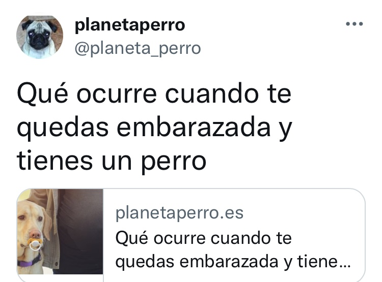

Seguimos avanzando en nuestro proyecto. En este apartado vamos a conocer los géneros periodísticos más importantes y a profundizar en las características de la noticia, texto informativo fundamental. También trabajaremos con las características de los titulares y los recursos que se utilizan para dar carácter objetivo a las noticias. Será en esta parte del trabajo cuando aprovechemos para iniciarnos en la temida sintaxis y comprendamos por qué es útil estudiarla y tenerla en cuenta para aplicar esos conocimientos en nuestros escritos.
Crearé una tarea en Classroom donde habrá que subir el trabajo y debe respetar la estructura habitual de estos textos, según los modelos que vayamos analizando.
Objetivos de este apartado. Al finalizar esta tarea debemos ser capaces de:
Reconocer y describir las características de la noticia frente a otros géneros periodísticos.
Analizar los elementos de la noticia (estructura y 6Ws).
Distinguir diferentes estructuras sintácticas en los titulares.
Diferenciar aspectos objetivos y subjetivos en las noticias y reconocer los procedimientos de modalización.
Redactar una noticia respetando las características del género.
¿Qué es noticia? ¿Y qué no...?
Vivimos rodeados de noticias, televisión, radio, prensa y ahora vamos a trabajar con las que aparecen en la prensa para conocer mejor su estructura, sus apartados... Después analizaremos diferentes noticias y de esa manera comprenderemos mejor sus características.
Vamos a repasar y poner en común algunos conceptos que caracterizan la noticia:
Actualidad: La noticia es el relato de un acontecimiento de actualidad que suscita interés público.
Objetividad: Decimos que un texto es objetivo cuando transmite información sin que aparezcan opiniones del autor. Las noticias se escriben en tercera persona.
Claridad y concisión: Una de las características de la noticia es que se trasmite la información de forma breve, precisa y los datos fundamentales aparecen en las primeras líneas.
Organización de la información: La importancia de la información va en orden decreciente. Los hechos más relevantes aparecen al comienzo y a medida que va avanzando la información, se informa sobre otros detalles que están relacionados pero no son fundamentales.
Analizamos una noticia
Ahora es nuestro turno. Para ello, vamos a analizar esta noticia para ver si cumple las características de este género:
Una vez, realizado este análisis seguro que ya dominamos unos cuantos "secretos" para saber cómo son las noticias y cómo hemos de redactarlas. No olvidemos guardar este trabajo en nuestro portafolio.
Cuerpo de titulares
En esta actividad nos vamos a centrar en los titulares informativos. Este ejercicio nos permitirá prepararnos para generar los titulares de nuestros textos periodísticos.
Una parte diferenciada de la noticia - y del reportaje y la entrevista, que veremos luego- son sus titulares. En ellos, se trata de condensar la esencia de nuestra información en un número de palabras limitado. Los titulares informativos cumplen varias funciones:
Despiertan el interés del lector por la noticia.
Deben incitar a la lectura de la información (si al lector no le interesa el titular, no procederá a la lectura del resto de la noticia).
Anuncian y resumen la información incluida en la noticia.
Poseen sentido propio, pueden ser leídos de forma independiente porque ofrecen en sí mismos los aspectos esenciales de la noticia.
En el periodismo, el titular no se limita simplemente a anunciar la noticia (Rueda de prensa del presidente), construye una narración en sí mismo que aporta la información más relevante (El presidente del Gobierno anuncia su dimisión). Para ello, a veces se compone lo que conocemos como cuerpo de titulares, formado por:
- un antetítulo: pequeño y en primer lugar, nos sitúa en el asunto de la noticia.
- el titular: título principal, a mayor tamaño, anuncia las W más importantes de la noticia. A veces, puede ser una cita literal de las palabras de uno de los protagonistas de la noticia o del reportaje o del propio entrevistado. En este último caso, suele aparecer su nombre o apellido (o el cargo, si no es muy conocido) y la cita exacta de sus palabras entre comillas.
- un subtítulo: de menor tamaño, situado debajo, para añadir W menos importantes que desarrollan o explican un poco mejor el titular.
Tesi Romero (creación propia). Cuerpo de titulares
Los titulares pueden tener diferentes estructuras a la hora de crearlos pero en esta secuencia nos vamos a fijar en aquellos que siguen la estructura: Sujeto y predicado.
Ahora vamos a ordenar los titulares que aparecen a continuación según su estructura y después, crearemos diferentes titulares y mejoraremos otros que dan lugar a confusiones muy divertidas.
El Ejército sirio expulsa al ISIS de su último gran feudo.
Una líder nacionalista se alza como principal rival político del presidente.
El Gobierno chino reconoce cinco nuevos casos de neumonía atípica.
La mujer interpuso una denuncia contra el agresor días antes.
El veto de Hamás al desarme amenaza la reconciliación Palestina.
El centro izquierda chileno entrará en una noche larga.
El español Alejandro Morellón gana el premio Hispanoamericano de Cuento Gabriel García Márquez.
Partículas llegadas del espacio desvelan un ‘gran vacío’ dentro de la pirámide de Keops.
La lucha de clases hundió a la ciudad de la pirámide del Sol.
Creamos titulares
Ahora cada grupo va a inventar seis titulares relacionados con nuestro centro o con una noticia que nos gustaría leer en la prensa. Su estructura debe ser similar a la de los titulares de la actividad anterior.
Y ahora... ¡mejoramos titulares!
A continuación, vamos a leer una serie de titulares que dan lugar a malos entendidos y confusiones (en algunos casos, muy graciosas). Seguramente, el periodista tuvo un mal día. ¿Os atrevéis a echarle una mano para mejorarlos? Las comentamos en gran grupo y seguro que nos reímos un rato.

Como recordaremos, como regla general, una oración se caracteriza por:
Tener sentido completo.
Presentar al menos un verbo en forma personal.
Constar de sujeto y predicado.
¡Juguemos un poco!
Selecciona el SUJETO más adecuado para cada titular
Su navegador no es compatible con esta herramienta.
Las noticias son objetivas, pero ¿cómo lo sabemos?
Hemos dicho que las noticias transmiten la información de manera objetiva pero en muchas ocasiones la objetividad se pierde porque el periodista deja ver su punto de vista al redactar la noticia. Vamos a conocer algunos procedimientos para modalizar y para dar carácter subjetivo al lenguaje,es decir para hacer que las noticias sean menos objetivas (descargar en formato editable odt y en pdf).
Resolveremos dos actividades que nos permitirán ver cómo se introduce la subjetividad en las noticias.
Actividad 1: analizar noticias sobre un mismo tema
Vamos a leer dos o tres noticias sobre el mismo tema e intentaremos descubrir qué matices diferencian unas de otras. Para realizar la actividad, recordamos los procedimientos de modalización que hemos revisado.
Tenemos a continuación tres enlaces de un mismo hecho noticioso. Reflejaremos los resultados de nuestro análisis en la Plantilla de comparación de noticias (descargar en formato editable odt y en pdf):
Actividad 2: introduciendo nuestra opinión en las noticias
Ahora vamos a leer estas informaciones que son objetivas y en grupos de tres iremos introduciendo los elementos de lenguaje necesarios para conseguir que dejen de serlo, es decir, para que se refleje vuestra opinión sobre el tema.
Información 1
33 fallecidos en un corrimiento de tierras
Al menos 33 personas murieron ayer en un corrimiento de tierra en la región de Och, en el sur de Kirguizistán. La catástrofe se produjo hacia las siete horas y destruyó doce casas en una localidad situada en el distrito de Kainam Alaisk, lo que causó también 19 heridos, según el portavoz del Ministerio de Seguridad, Emil Akhmatov.
Información 2
Diez muertos en un incendio en Moscú
Diez personas murieron, ocho fueron hospitalizadas y una más tuvo que recibir atención médica ayer debido a un incendio en una empresa industrial en las afueras de Moscú. Aún no se conocen las causas del incendio, pero se cree que pudo ser provocado por los operarios al realizar unos trabajos de soldadura sin que se respetaran las medidas de seguridad.
Cuando terminemos, el secretario de cada grupo guardará el trabajo en el portafolio del grupo.
Vídeo interactivo para APRENDER MÁS
¿Tienes claras las ideas sobre la noticia? ¿Sientes curiosidad por las diferencias con otros géneros periodísticos?
Presta atención al siguiente vídeo, en el que el profesor Quique Castillo te lo explica todo muy bien y responde a las cuestiones que te irán saliendo cada cierto tiempo. Cuidado con las faltas de ortografía, que penalizan. Cuando termines, despliega los resultados y saca una captura para subirla en la tarea de Classroom. ¡Contará en tu nota individual!
Como en cada secuencia de trabajo, llega el momento de pararnos y pensar qué hemos aprendido, cómo nos hemos sentido.... Así pues, escribimos en nuestro diario de aprendizaje. La plantilla para el diario de aprendizaje de 'Una noticia es ' nos servirá de ayuda (descargar documento editable en formato odt y en pdf).